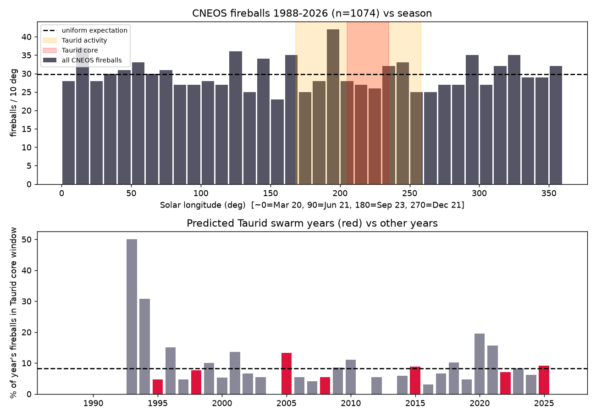
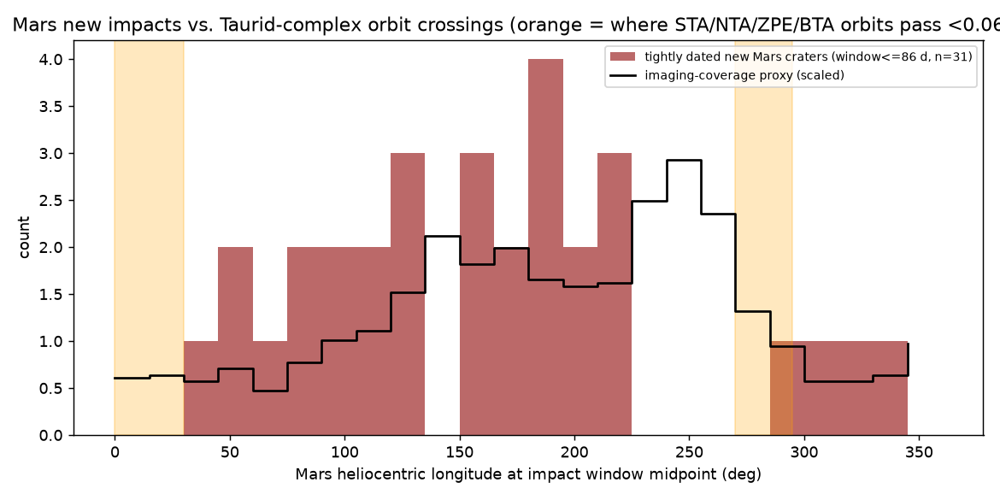
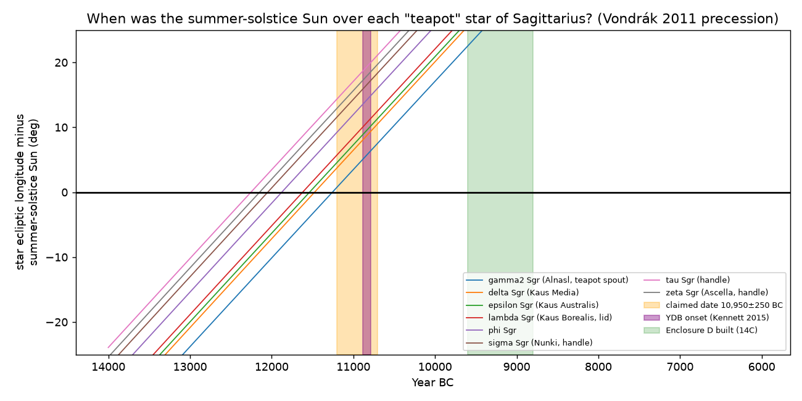
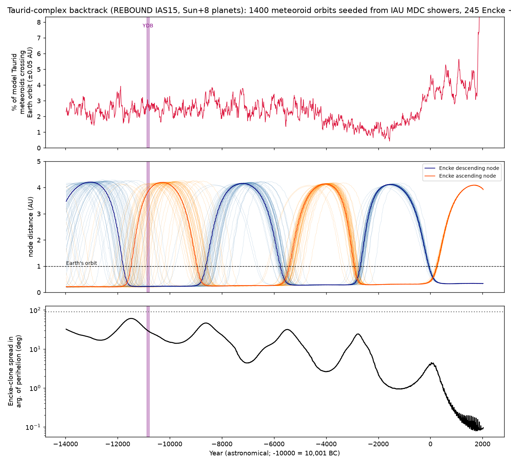

Moon
p = 0.0005
Oct–Nov flash rate 1.84× other months. 16 Taurid-tagged flashes on 29–31 Oct 2022, a predicted swarm year. Sporadic flashes show no excess (p = 0.40).
Impact Hypothesis · Phases 2–4 · 27 November 2026
We tested whether the Taurid / Encke meteor stream lines up with dated impacts on Earth, the Moon and Mars, and whether ancient monuments were built or carved to commemorate those events. Every historical test used a random-date or random-orientation control. The one clear signal is on the Moon today. The Holocene craters, Mars, the monuments, the Vulture Stone “date stamp,” and the Younger Dryas boundary all come out null or inconclusive.
Read the findings · Scorecard · Download the full report (PDF)
Loading catalog…
Times are America/New_York (Eastern, 24-hour). CNEOS source times are TDB and have been converted.
| Object | Body | Date (ET) | Distance (km) | Distance (LD) | vrel (km/s) | Size | H | PHA |
|---|
Object names link to the official JPL SBDB page. Distances and times in this table are the CNEOS values, converted to Eastern Time and to km / lunar distances (1 LD = 384,400 km). Size is a JPL-measured diameter when one exists; otherwise it is estimated from absolute magnitude H (Fowler & Chillemi 1992) with pV = 0.154, the CNEOS Sentry convention, and a typical albedo range of 0.05–0.25 shown on hover. Click a row to sketch its orbit.
| Object | Date (ET) | CNEOS (km) | Ours (km) | Δ km | Δ min |
|---|
Top-down ecliptic J2000 view of the inner solar system. Planet rings are circular at their mean distances, for scale. The NEO path is a Keplerian ellipse from the JPL SBDB osculating elements — a sketch, not the N-body validation on the left.
The one significant result
The NELIOTA lunar impact-flash survey recorded 16 flashes from Taurid meteoroids on 29–31 October 2022, a year predicted in advance as a Taurid “resonant swarm” return. Across August 2019–August 2023, flashes per observed hour were 1.84 times higher in October–November than in other months (p = 0.0005). October–November ranks first of the twelve two-month windows. That whole excess comes from meteor showers (Taurids plus Orionids). Flashes tagged as sporadic show no October–November excess (ratio 1.09, p = 0.40). The Taurid impactors were roughly 20–250 grams.
Monthly observing hours were digitised from Fig. 2 of Liakos et al. 2024; our total is 172.76 hours against their published 172.9 hours. Validated flashes alone give a ratio of 1.51 (p = 0.051).

Every historical test is against a random-date or random-orientation control. “Significant” means the result is unlikely under that control. “Null” means the data look like chance. “Inconclusive” means the test did not have enough power, or the comparison was chosen after looking at the plot.
Oct–Nov flash rate 1.84× other months. 16 Taurid-tagged flashes on 29–31 Oct 2022, a predicted swarm year. Sporadic flashes show no excess (p = 0.40).
No Taurid-season excess in 1,074 CNEOS fireballs (1988–2026). No excess in predicted swarm years. Holocene craters sit at ordinary stream activity; all seven were iron meteorites, not cometary debris. The Younger Dryas boundary is also consistent with chance (p = 0.30).
Taurid orbits do pass close to Mars, but among 80 fresh craters dated to within about six months, the count at those orbital crossings matches chance (ratio 1.00). Most Martian dating windows are years long, so the test has little power.
The method finds the known solstice alignments at Stonehenge, Newgrange and Nabta Playa. Taurid-radiant alignments look like chance (2 of 15 tests under p = 0.05, where 0.75 are expected). Construction dates are not unusually high in Taurid activity (p = 0.98).
The summer-solstice Sun stood over the Sagittarius “teapot” spout about 300 years before the claimed 10,950 BC, and Enclosure D was built 1,350–2,150 years after the claimed event. Several equally valid readings of the pillar make a chance hit on the Younger Dryas unsurprising (9–31%).
In the NASA/JPL CNEOS fireball catalog, the Taurid activity window (solar longitude 168–258°) holds 263 of 1,074 events against 268.5 expected (ratio 0.98, p = 0.66). The narrower “core” window and the June daytime β Taurids are also consistent with a uniform year. Predicted swarm years (1995, 1998, 2005, 2008, 2015, 2022, 2025) show no excess (odds ratio 1.12, p = 0.35).

Southern and Northern Taurid orbits pass within about 0.01–0.06 au of Mars’s orbit, at Mars heliocentric longitudes near 0–30° and 270–295°. We compared 1,203 dated new Martian craters (Daubar et al. 2022) with those crossing longitudes. The 80 craters with formation windows of 172 days or less had 6.46 expected impacts in the bands versus a null of 6.47 ± 1.54. Ratio 1.00, p = 0.49.

We rebuilt the precession-corrected sky (Vondrák, Capitaine & Wallace 2011) at the construction dates of Göbekli Tepe Enclosure D, the Great Pyramid, Stonehenge, Newgrange and the Nabta Playa calendar circle, and asked how close each axis came to the rising or setting of the Sun, several bright stars, and the Taurid radiant of that era (taken from the backtrack). Two controls: windows of the same length placed at random between 12,000 BC and AD 1, and the monument’s axis set rotated at random.
The solar test is the positive control, and it works: Stonehenge, Newgrange and Nabta Playa recover their published solstice alignments (3 of 10 solar tests p < 0.05; combined p = 0.012). Taurid radiants do not: 2 of 15 tests came in under p = 0.05, where 0.75 would be expected by chance (combined p = 0.17), and neither “hit” is convincing on its own. Giza’s due-east axis will match any object near the equator; the Nabta match is a daytime shower whose radiant sits next to the Sun and would have been invisible. The Precession Clock already shows how the sky over these sites drifts with time.
Open the Precession Clock — north-pole stars, the equinox drift, and the pre-dawn equinox sky at Giza, Stonehenge and Göbekli Tepe.

Sweatman & Tsikritsis (2017) read Pillar 43 at Göbekli Tepe as a star map, with the vulture as the Sagittarius “teapot,” and dated it to 10,950 ± 250 BC by placing the summer-solstice Sun over the teapot’s spout — close to the proposed Younger Dryas impact. Using the same long-term precession model, the summer-solstice Sun stood over the spout star (γ² Sagittarii) in about 11,250 BC, not 10,950 BC. The teapot as a whole spans 11,250–12,250 BC. Enclosure D was built about 9600–8800 BC, 1,350–2,150 years after the claimed event.
If several equally plausible readings are allowed (which solstice or equinox, which star), a chance hit within ±250 years of the Younger Dryas is not rare: about 9% for four readings, 17% for eight, 31% for sixteen. The pillar can still be symbolic. It is not a dated commemorative stamp of that event.

Hypothesis for a pre-registered follow-up — not a finding
Comet 2P/Encke’s orbit crossed Earth’s in pairs about every 2,930 years: around 11,780 / 11,480 BC, 8,950 / 8,620 BC, 5,760 / 5,420 BC, 2,930 / 2,690 BC, and 60 BC / AD 250. Clone orbits stay coherent; the uncertainty grows from about ±20 years recently to about ±230 years at 12,000 years ago. Outgassing forces are not modelled.
Göbekli Tepe Enclosure D, Newgrange, Stonehenge and Giza each fall within about 250 years of one of those pairs. Against uniform random dates that looks unlikely (p = 0.019). With a fairer control that keeps their real clustering — most of these monuments were built in 3200–2500 BC — the result is not significant (p = 0.17; 0.087 without Giza). We noticed this after looking at the plot, so it is a hypothesis, not a result. The next step is a pre-registered list of monuments and dates, fixed before the comparison is run again. We also plan to test other meteor streams, and to ask whether major ancient texts recorded cosmic events in metaphor, including the possibility of a future fire-from-the-sky event and the record of past solar storms. We will report whatever the data say.


Hover or tap to read a date. Gold ticks are Encke’s Earth-orbit crossings (a hypothesis for follow-up). Green bands are monument construction windows, brown are Holocene craters, purple is the Younger Dryas boundary, and orange is the claimed Vulture Stone date.
Hover a band, tick or the red curve for details.
The backtrack used REBOUND with the IAS15 integrator, the Sun and eight planets from JPL Horizons, comet 2P/Encke from the JPL Small-Body Database, and 1,400 meteoroid orbits seeded from observed Taurid-complex showers in the IAU Meteor Data Center (Jopek 2003; Brown 2008, 2010; Jenniskens 2016, 2018), plus 245 Encke clones, integrated 16,000 years backward. As a check, the model reproduces today’s Southern Taurid and June β Taurid radiants. The stream model starts from today’s particles, so it cannot show how dense the stream really was in the deep past, and swarm years cannot be predicted beyond a few centuries. Crater ages carry uncertainties of hundreds of years. Fireball speeds exist for only 30 events.
This page is a static section of RealAether, intended to live at
realaether/impact/ on GitHub Pages. The upcoming-flyby list
is taken from the
JPL SBDB Close-Approach Data API (CNEOS),
which is authoritative. Orbital elements and physical parameters come from the
JPL SBDB Query API.
Objects currently on the
Sentry risk list are flagged, but this tracker is not an impact-risk product — Sentry is.
Our REBOUND + DE440s N-body engine (IAS15, first-order GR, Earth and Moon separate) independently re-integrates a subset:
every upcoming Earth approach within 0.01 au, the 200 closest, and every condition-code-0 upcoming Earth approach.
It does not re-integrate all 43,000+ NEOs, because CNEOS already searched that catalog. The engine does not include Earth J2, Yarkovsky, or asteroid perturbers.
Civil times are converted from CNEOS TDB to America/New_York. The Taurid / Encke tests, monument alignments and Vulture Stone check are documented above and in the 27 November 2026 report. No home address or local network information is published here.